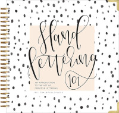
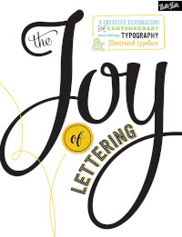

Hand lettering é uma técnica de desenho de letras à mão livre. É a arte de desenhar letras de forma criativa, utilizando diferentes estilos, tamanhos, formas, cores e materiais para criar um design único. O objetivo do hand lettering é criar peças de arte com letras que sejam visualmente atraentes e que transmitam uma mensagem de forma clara e impactante. É uma técnica muito utilizada em projetos de design gráfico, convites, cartões de felicitação, decoração de ambientes e outras aplicações visuais.
Quem "descobriu" o Hand Lettering?
O hand lettering não foi "descoberto" por uma pessoa específica, mas é uma técnica que vem sendo usada há séculos, principalmente antes do surgimento da impressão em massa e da tipografia digital. As letras eram desenhadas à mão para livros, manuscritos, inscrições e outras aplicações visuais. Com o passar do tempo, o hand lettering se tornou uma forma de arte e uma técnica valorizada pelos designers gráficos, artistas e calígrafos. Nos últimos anos, o hand lettering voltou a ganhar popularidade, impulsionado pelas redes sociais e pelo interesse crescente em design e arte feitos à mão.
Se você está interessado em aprender Hand Lettering, aqui estão algumas sugestões de livros que podem ajudá-lo:
 "Hand Lettering 101" por Chalkfulloflove - Este livro é um guia abrangente para iniciantes em hand lettering, incluindo instruções passo a passo e muitas práticas.
"The Ultimate Brush Lettering Guide" por Peggy Dean - Este livro é uma excelente introdução à caligrafia com pincel e inclui instruções passo a passo, exercícios práticos e dicas úteis.
 "The Joy of Lettering" por Gabri Joy Kirkendall - Este livro abrange vários estilos de letra, incluindo caligrafia moderna, lettering à mão livre e letras desenhadas. Ele também inclui projetos criativos para praticar suas habilidades.
Espero que estas sugestões possam ajudá-lo em sua jornada de aprendizado de hand lettering!